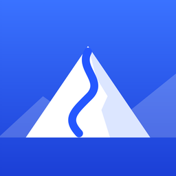

dropTerms of use
drop: Ski Tracker for iPhone · Effective 22 November 2026
1. Who we are
drop is developed by Riccardo Mattucci, an individual developer in Italy (“we”). Contact: support.dropski@gmail.com.
2. The app
drop is free. It records your ski days on your iPhone, shows ski areas and pistes on maps and in 3D, suggests and guides routes between pistes and lifts, and lets you create images to share. These terms apply together with Apple’s Licensed Application End User License Agreement. If they conflict, these terms prevail where the law allows.
3. Licence
We grant you a personal, non-exclusive, non-transferable licence to use drop on Apple devices you own or control, for your own non-commercial use. You may not copy, modify, resell or reverse engineer the app except where the law allows it.
4. Maps, data and measurements
- Ski areas, pistes and lifts are © OpenStreetMap contributors, available under the Open Database Licence, prepared by OpenSkiMap. Terrain comes from Terrain Tiles (Mapzen, AWS Open Data). Snow and weather forecasts are by Open-Meteo (CC BY 4.0) and are model estimates, not resort reports. The full list is in the app under Settings › Data sources and licences.
- Speeds, distances, vertical, times and routes are estimates based on GPS and the barometer and can be inaccurate.
- Famous circuit descriptions are our own summaries of public information and may not reflect the current season. Always check with the ski area.
5. Your content
Your recorded days and the images you create are yours and stay on your phone unless you share them. When you share an image (for example to Instagram), you are responsible for it and for following the rules of the service you share it on.
6. Responsible use
Use drop only where and when it is safe and lawful to do so. Skiing and snowboarding carry risks of serious injury; drop does not reduce them and is not a safety, avalanche or emergency device. In an emergency, call the local emergency number (112 in Europe).
7. No warranty
drop is provided “as is” and “as available”, without warranties of any kind, to the extent permitted by law. We do not promise that it will be error free, uninterrupted or that the data will be accurate.
8. Liability
To the extent permitted by law, we are not liable for indirect or consequential damages, loss of data, or damages arising from reliance on maps, directions or measurements. Nothing in these terms limits liability for death or personal injury caused by negligence, for fraud, or any other liability that cannot be limited under applicable law, and nothing affects your statutory rights as a consumer.
9. Changes and termination
We may update drop and these terms. The current version is always on this page. You can stop using drop at any time by deleting it.
10. Law
These terms are governed by Italian law. If you are a consumer, you also keep the protection of the mandatory laws of the country where you live, and you may bring proceedings in your local courts.
Termini d’uso
drop è sviluppata da Riccardo Mattucci, sviluppatore individuale in Italia (contatto: support.dropski@gmail.com). L’app è gratuita e si applica insieme al contratto di licenza standard di Apple. Ti concediamo una licenza personale, non esclusiva e non trasferibile per uso non commerciale sui tuoi dispositivi Apple.
Dati di comprensori, piste e impianti © OpenStreetMap contributors (ODbL), tramite OpenSkiMap; rilievo da Terrain Tiles (Mapzen, AWS Open Data); meteo e neve da Open-Meteo (CC BY 4.0), stime di un modello. Velocità, distanze, dislivelli, tempi e percorsi sono stime da GPS e barometro. Le descrizioni dei giri famosi sono nostri riassunti di informazioni pubbliche: verifica sempre con il comprensorio.
Le tue giornate e le immagini che crei sono tue e restano sul telefono finché non le condividi; quando condividi sei responsabile del contenuto. drop non è un dispositivo di sicurezza, anti-valanga o di emergenza: in caso di emergenza chiama il 112.
drop è fornita “così com’è”, senza garanzie, nei limiti consentiti dalla legge. Non rispondiamo di danni indiretti, perdita di dati o danni derivanti dall’affidamento su mappe, indicazioni o misure, salvo i casi in cui la responsabilità non può essere limitata per legge (dolo, colpa grave, danni alla persona) e fatti salvi i tuoi diritti di consumatore. Questi termini sono regolati dalla legge italiana, ferme le tutele inderogabili del Paese in cui risiedi.